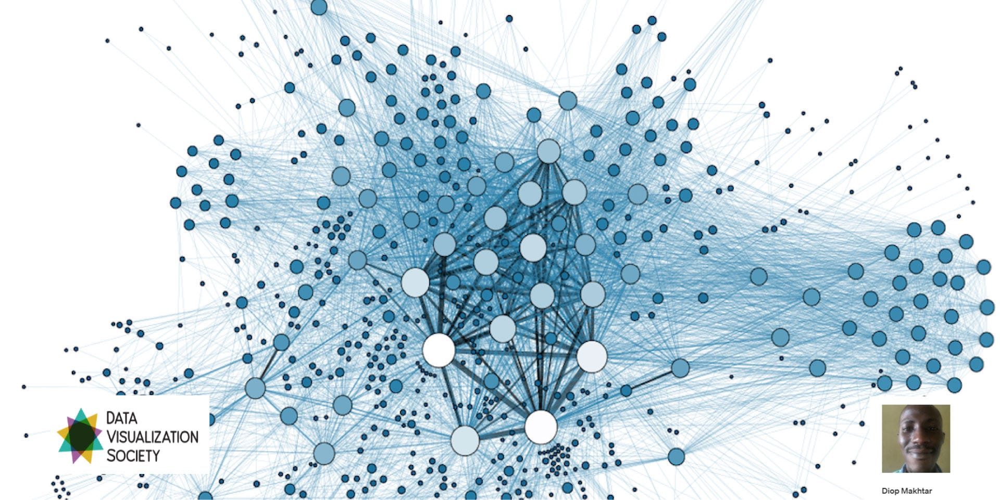
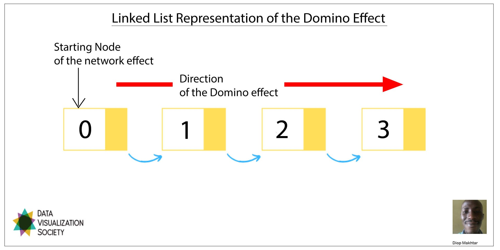
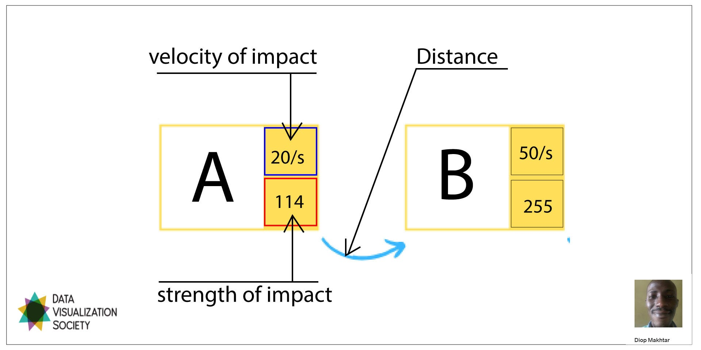
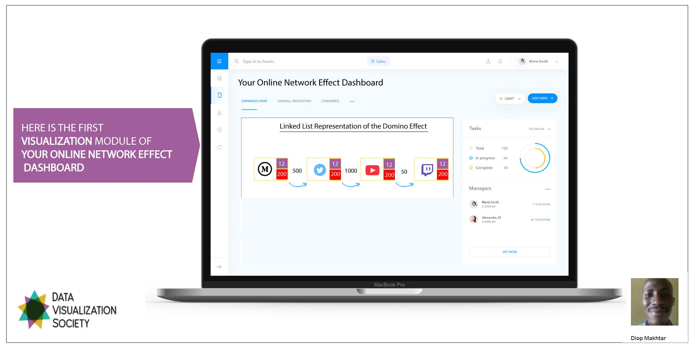
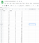
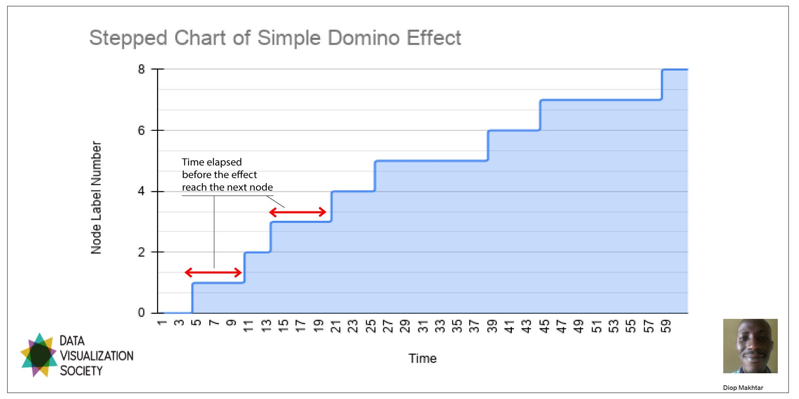
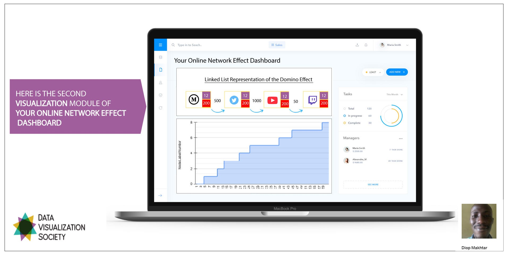

Visualization of the Network effect
Case of a unidirectional effect that behaves like the domino effect


The network effect is probably playing in the background since the beginning of this world but we as humankind experienced it more since we started communicating by the use of signs and languages and this era of mediated technology made this effect more impactful and worth studying.
In this article, I will be trying to show you how this network effect can be visualized. I will for sure take some peculiar case of network effect because it is very difficult to monitor and track this effect globally and come up with theories and visuals that illustrate it completely
the first simplest form of visualization I thought would be interesting to remind you of is the one below
if I was willing to be politically kind of incorrect I could only show you this one
The domino effect is another name for pinning the network effect but this domino effect is only a peculiar form of network effect that takes one direction each element impacting the next one. The simplest representational form of visualization that we can lend to computer science and data structure for visualizing the domino effect is the linked list

in such a case, Each node is connected to another one by a unidirectional link. According to the genre of network effect, you're trying to visualize, the unidirectional links that connect the nodes that are the subjects of your study can have several parameters like the strength of impact and the velocity of impact which will define with the distance from node A to Node B what time it will take for the effect to travel from node A to node B.
Here is how you could visualize these parameters of the domino effect in using the representation of a linked list

with these first elements of consideration for visualizing the domino effect which is a special case of a network effect, you can build the first visualization module of your online network dashboard like this

As subjects of the nodes, I took the social media icons of several platforms like Medium, Twitter, Twitch, and youtube but you could be interested in tracking, monitoring, and visualizing the network effect in another field like bacteriology. Whatever is your field of network effect study, if you are in front of one that has this topology (I mean structure) know that you can structurally visualize it like a linked list.
This is one simple example of a structural representation of the network effect because we could want to visualize the structure or the behavior of a network effect. So you have two kinds of visualizations, the first in Structural while the second is behavioral.
After this first example of a structural representation of a special network effect named the domino effect, you may already guess what kind of structural visualization you could expect but I will go into these types of topologies of networks and their associated network effect visualization that you could build with in coming articles. I chose to write one article for each type of topology of network with two parts each.
Part one for the structural or topological visualization and part two for the behavioral visualization.
For this topology of unidirectional network effect that impacts one element at a time you have already the structural visualization. Let’s go into one particular behavioral visualization of this kind of network effect.
Behavioral visualization of the domino effect.
Together we have defined some parameters of the network effect that we are trying to visualize. These parameters, let’s remind ourselves of them, are the velocity of impact, the strength of impact, and the distance between the nodes of the network which in this case has the structure of a singly linked list.
The effect that applies on this network could have different velocity from node to node and the distance between these nodes can also be different. I provided in the pictures above the example of online social media platforms but you can also take a more simple example of a plant that produces a product that is built by several people each one giving the manufacturing product to the next person once his or her job is done. it is the Fordist representation of work that MBA folks know and would improve. Charly Chaplin provided us a very artistic visualization of this kind of unidirectional process which behaviorally has embedded into it the domino effect. Here is the masterpiece of this great artist, again the network effect is not a new thing
Dear Charly shows you with ART how is the effect of the domino effect when he stops following the instruction and I am not wrong by saying that key executives fear the network effect because you saw how the boss fastly corrected Chaplin.
So you could take the time that it takes for the network effect to travel from one node to the next node and make a visualization of the motion of the domino effect over time. The one that may be the best type of visualization could be a stepped chart that you could fastly build with Excel using a simple table and automatic series generating.
Here is the table (not complete) I have built for you for this purpose

Here is the :
Stepped Chart of a Simple unidirectional domino effect

With these two types of visualization of a network effect, your online network effect dashboard is now like this :

Thank you for reading me and thank you for the Dta Visualization Society for providing me the opportunity to show up. If you have read the whole article you probably like books. I am venturing Book Dojo a mail-only startup publishing data-driven books, building book-driven platforms for book communities. If this interests you, you can participate by providing your email here because Book Dojo is a mail-only startup.